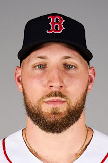
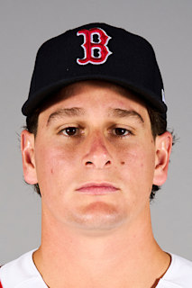
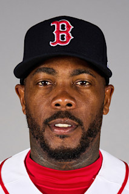
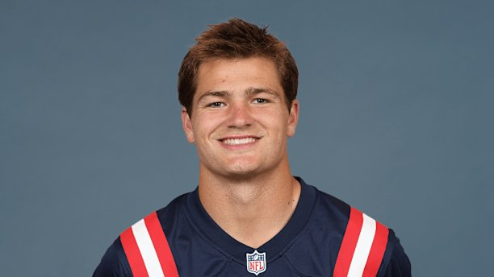
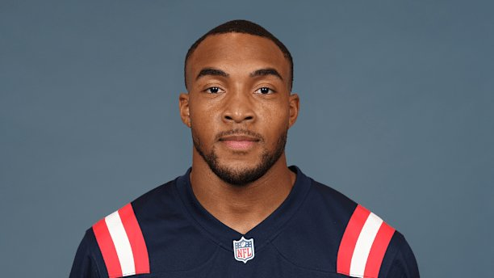
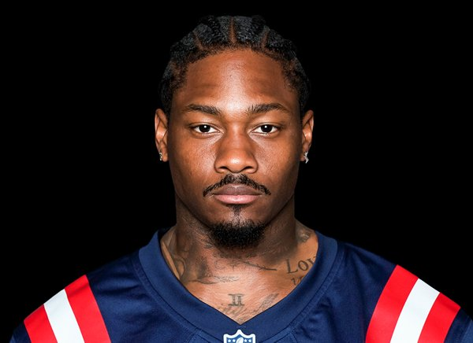

Your single source for scores, stats & highlights
Player profiles, stats, and highlights for Boston athletes

Garrett Crochet is the Boston Red Sox's ace and one of the best pitchers in baseball. Acquired from the Chicago White Sox in December 2024, Crochet immediately established himself as a dominant force in 2025, leading all of MLB with 255 strikeouts while posting an 18–5 record and a 2.59 ERA across 205.1 innings. He was the first pitcher to finish a season with 250+ strikeouts and an ERA below 2.75 since 2019. Crochet signed a six-year, $170 million contract extension with Boston in 2025.

Roman Anthony is one of the most exciting young players in baseball. Selected 79th overall by the Red Sox in the 2022 draft, he made his MLB debut on June 9, 2025, becoming the youngest Red Sox player to debut since Rafael Devers. Before his call-up, Anthony dominated Triple-A Worcester slashing .288/.423/.491 with 10 home runs. He was a finalist for the AL Rookie of the Year Award and named to MLB's 2025 All-Rookie Team. In February 2026, Anthony represented the United States in the World Baseball Classic, hitting a game-winning home run in the semifinals. He is signed through 2033 on a nine-year, $130 million extension.

Aroldis Chapman, nicknamed "The Cuban Missile," is one of the greatest closers in baseball history. In 2025, Chapman earned the Mariano Rivera American League Reliever of the Year Award and was named to the All-MLB First Team. He ranked first in ERA, WHIP, and opponent batting average among all pitchers with 50+ innings pitched. Chapman recorded 32 saves in 2025, his ninth career 30-save season — the most among active pitchers. He also threw the fastest pitch by a Red Sox pitcher in the Pitch Tracking Era, a 103.8 mph fastball on May 7th. Chapman has 367 career saves, placing him tied 12th all-time.

Drake Maye is the future of the New England Patriots franchise. Selected 3rd overall in the 2024 NFL Draft out of North Carolina, Maye took a massive leap in his sophomore season, leading the Patriots to their first division title since 2019 and first playoff appearance since 2021. He finished the 2025 season ranked 1st in QBR (77.1), 4th in passing yards, and 3rd in touchdowns. In Week 17 against the Jets, Maye completed 90.4% of his passes with five touchdowns — the highest QBR (99.8) ever recorded in the stat's history.

TreVeyon Henderson was selected by the Patriots in the 2nd round (38th overall) of the 2025 NFL Draft out of Ohio State, where he won a national championship. He quickly emerged as one of the best rookies in the NFL, highlighted by a Week 10 performance where he became the first Patriots player to record two 50+ yard runs in a single game since 2007. Henderson scored three touchdowns in a single game against the Jets in Week 11, and finished the regular season with 911 rushing yards, 9 touchdowns, and a 5.1 yards-per-carry average across 17 games.

Stefon Diggs signed a three-year, $69 million deal with the Patriots in March 2025 after recovering from a season-ending ACL injury with the Texans. He chose jersey number 8, which symbolizes new beginnings in the Bible, fitting for a new chapter in New England. Diggs immediately became Drake Maye's top target, recording four 100-yard games in 2025 — the first Patriots receiver to do so since Julian Edelman in 2013. He finished the season with 85 receptions for 1,013 yards, his seventh career 1,000-yard receiving season.